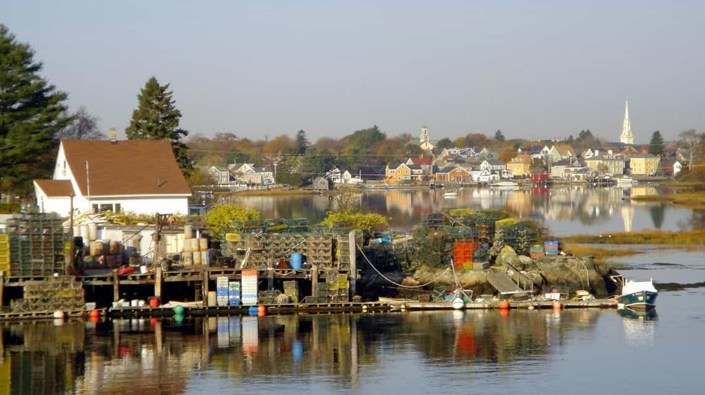

Brewer,Jack-of-trades, Master of none and all around grouchy 21 year old New Englander.


Recently, the New York Times came out with an article discussing the idea of diversifying New Hampshire, and also floated the same idea for Vermont and Maine, due to their majority white population along with the struggle of a “lack of community” that non-natives and immigrants face when moving here. Being fed up with this “diversity” bullshit, I felt a response was in order.
Dear America,
We, the states of Maine, Vermont and New Hampshire, have heard of late through the southern rag known as the New York Times that you think we are too white. And we have only one thing to say to you…
We are not too white, you are just too racist.
We are not too white; that is not a thing a state can be. We are not keeping people of different races from living here. They simply do not wish to live here. And that is something we always considered just fine. We cannot force people to want to live here anymore than you can bully us into wanting to change who we are simply to fit into what you currently consider “the correct mix of people”.
We have no problem with minorities and the “issue” of our whiteness has never occurred to us. In the same way that the “blackness” of Kenya or the “Asianess” of Japan never occurred to us either. Did you ever stop to think that perhaps it’s not us who have a problem but you?
You are spending so much time concerning yourself over race that you are beginning to become almost a basket case over it. You rage over three small states having a majority white population while you praise the future that minorities will hold in the nation. Why does this matter to you so badly? Aren’t we all just people? Can’t we be who we are?
Your racism on the matter has shown through perfectly. You think that by making us “the correct mix of people” will achieve something? But what? It doesn’t make any sense whatsoever, and we cannot wrap our minds around why you continue to pretend that you’ll somehow make us better in this way. We are prosperous just the way we are. And to be entirely honest, we have grown rather tired of your bigotry towards us more photosensitive Anglo-saxon types.

This is just an attempt to justify your racism and ethnic hatred towards a group of people because their population percentages in a few states don’t suit your narrative. You dislike us for our skin pigment and our culture, consistently try to belittle our food, fool our youth to into your indoctrination camps known as universities, and enable crime dens you call cities to suck us dry of our vitality like the shameless vampires you are. All the while, you send in people from other states and countries to serve as your shock troops to change us so we bow down before you.
The threat of genocide that you have levied against we New Englanders is as horrifying as it is pathetic. You pretend it is for our betterment when you know full well that we are already just fine. We may be somewhat liberal, but we are neither fools nor Californians (I repeat myself). We have pride in our culture, identity, and way of life.
In truth, we have a just fine mix of people. We’re liberty minded, hard working, and grounded to the earth. We did not ask for your opinion. Nor did we ask the fat cats who want to bring in cheap labor what they thought. The immigrants who come here both from other parts of the country and from abroad are welcome to stay, but we do things our way, not theirs. This is our native-born home, not theirs. They can adopt a New England state of mind or get packing.
We invite you and all who take issue with how we are to take a long walk off one our fine short piers. We do not desire to be like you, we do not desire to take in thousands of people and become a modern tower of babble like you. We do not wish to be an ethnic colony fighting over the crumbling remains of our once great civilization. We want to be America. We want immigrants to come in small numbers, if we even want any at all. And we want to retain our cultural heritage for future generations to come.
You need to stop with the white hatred towards us and stop trying to change the world in degrading ways. There are far more pressing concerns like the imminent collapse of your welfare state and the current brewing Civil War caused by your constant subversion.
We three states, along with the rest of New England, will be 400 years old in 2020. We have gotten along just fine being ourselves this whole time. We are of the same stock today as we have been since the pilgrims first landed here in 1620. On our 400th birthday, we will continue to enjoy our hearty, underwhelmingly seasoned food, we will burn at the beach and call it a tan, we will still not pronounce our Rs, we will continue to pick apples in the fall, and eat delicious cider donuts. We will continue to shoot our machine guns, go to our agricultural fairs and drink our craft beers. and lastly we will be white majority, not because we are racist, not because we dislike minorities, but because that’s just the way we are and happy to be so. We appreciate your concern but mind your own damned business.
Sincerely, your older cousins,
Maine, New Hampshire and Vermont
Read Next: 10 Racist, Sexist, Xenophobic, And Homophobic Countries Ignored By The Left